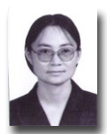
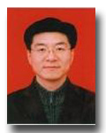

区域生态环境过程研究
学科带头人：
 |
 |
 |
李雪铭 教授 |
张华 教授 |
刘欣 副教授 |
研究内容：
针对东北区域特有的生态系统类型以及辽宁省特有的海陆生态环境，采用自然地理学的空间思维和空间信息科学的高新技术，研究区域生态系统服务功能演变与价值评估、生态安全演变机制与预警、生态退化机理和过程等。城市生态系统是人与自然-环境-社会-经济组成的复合巨系统，人居环境研究与城市生活息息相关的各物质和非物质生产部门（包括城市规划、住宅设计、城市服务保障支撑系统和城市文化娱乐等）的布局与组合。
研究方向：
◆ 城市人居环境与城市人工地貌演变过程研究
◆ 区域生态系统服务评估与功能演变研究
◆ 区域生态安全演变机制、预警与空间决策支持研究